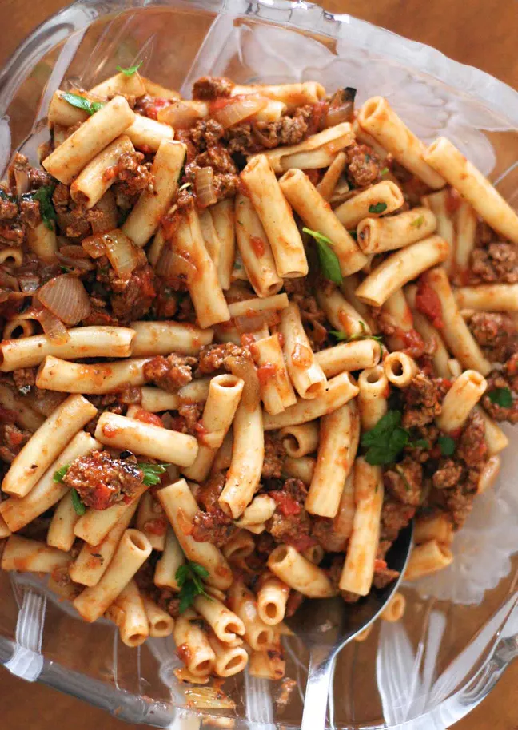

Penne Pasta with Meat Sauce

Description
So easy! Penne pasta tossed with a simple tomato sauce with ground beef, onions, Italian seasoning, garlic, and basil. This penne pasta dish is a perfect, budget-friendly, midweek meal that everyone will love.
Ingredients
- 8 ounces penne pasta
- Salt and Seasonings
- 2 tablespoons extra virgin olive oil
- 1 pound ground beef (16% fat)
- Onions, Garlic, Tomato Sauce
Steps
- Cook the penne pasta:
- Sauté onions, garlic, with seasonings
- Brown the ground beef
- Add beef and tomato sauce to onions
- Adjust seasonings and add the pasta